← Mục lục sáchSÁCH DỊCH · ECGBOOK · CHƯƠNG 1
GIẢI PHẪU VÀ ĐIỆN SINH LÝ CƠ BẢN CỦA TIM
BÀI 1. TUẦN HOÀN VÀNH
Hệ thống dẫn truyền của tim
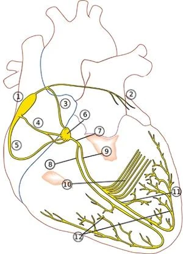
- Hệ thống dẫn truyền (conduction system) chịu trách nhiệm cho
- Sự hình thành và dẫn truyền xung động (impulses) khắp cơ tim hoạt động (working myocardium)
- Một số phần thiết yếu cho chức năng tim
- Đặc biệt là các chủ nhịp (pacemakers) của tim (nút xoang – SA node, nút nhĩ thất – AV node)
- Đây là lý do chúng có nguồn cấp máu kép (duplicate blood supply)
- Hệ thống dẫn truyền bao gồm:
- Nút xoang nhĩ (Sinoatrial – SA Node) (1)
- Bó Bachmann (Bachmann's Bundle) (2)
- Các đường liên nút (Internodal Pathways) (3,4,5)
- Đường liên nút trước (Anterior Internodal Pathway – bó James) (3)
- Đường liên nút giữa (Middle Internodal Pathway – bó Wenckebach) (4)
- Đường liên nút sau (Posterior Internodal Pathway – bó Thorel) (5)
- Bộ nối nhĩ thất (Atrioventricular – AV Junction) (6,7)
- Nút nhĩ thất (Atrioventricular – AV Node) (6)
- Bó His (Bundle of His) (7)
- Nhánh phải bó His (Right Bundle Branch) (8)
- Nhánh trái bó His (Left Bundle Branch) (9)
- Phân nhánh sau trái (Left Posterior Fascicle) (10)
- Phân nhánh trước trái (Left Anterior Fascicle) (11)
- Sợi Purkinje (Purkinje Fibers) (12)
Động mạch vành phải và động mạch vành trái
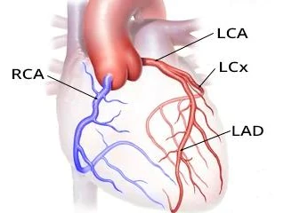
- Tim được cấp máu bởi 2 động mạch vành
- Xuất phát ngay phía trên van động mạch chủ, từ gốc động mạch chủ (aortic root)
- Động mạch vành phải (Right Coronary Artery – RCA)
- Động mạch vành phải
- Có các nhánh chính lớn hơn vì nó cấp máu cho thất phải
- Nơi có máu khử oxy chảy qua
- Động mạch vành trái (Left Coronary Artery – LCA)
- Động mạch vành trái
- Sau một đoạn ngắn, nó chia thành:
- Động mạch liên thất trước (Left Anterior Descending Artery – LAD)
- Còn được gọi là RIA, hoặc
- Nhánh liên thất trước (Anterior interventricular branch).
- Động mạch mũ trái (Left Circumflex Artery – LCx)
- LCx có thể được gọi bằng nhiều thuật ngữ khác nhau:
- Động mạch mũ (Circumflex artery – Cx hoặc CX)
- Ramus circumflex artery (RCx hoặc RCX)
- Động mạch mũ trái (Left circumflex artery – LCx hoặc LCX)
- Động mạch liên thất trước (Left Anterior Descending Artery – LAD)
- Đường đi và kiểu phân nhánh của các động mạch vành thay đổi (variable)
- Động mạch vành trái và phải có rất ít nối thông (anastomoses – connections)
- Trong trường hợp tắc (occlusion) thân chính hoặc một nhánh của một động mạch
- Điều đó dẫn tới thiếu máu cục bộ cho tới nhồi máu cơ tim ở vùng phía sau chỗ tắc (tắc = hẹp 100%)
Nhánh liên thất sau và nhánh liên thất trước
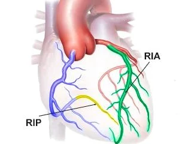
- Nhánh liên thất sau (Ramus Interventricularis Posterior – RIP) cấp máu cho
- Phần dưới của tim (mặt hoành)
- 1/3 sau của vách liên thất, nơi có nút nhĩ thất (AV node)
- RIP chịu trách nhiệm cho chức năng của nút nhĩ thất
- RIP có thể là nhánh của động mạch vành trái hoặc phải
- Nhánh liên thất trước (Ramus Interventricularis Anterior – RIA) cấp máu cho
- 2/3 trước của vách liên thất
- RIA là nhánh của động mạch vành trái
Ưu thế động mạch vành
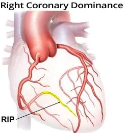
- Ưu thế động mạch vành (coronary artery dominance) được xác định bởi nhánh liên thất sau (ramus interventricularis posterior – RIP)
Ưu thế động mạch vành
- Ưu thế động mạch vành phải
- 70% số người có động mạch vành phải ưu thế
- RIP xuất phát từ động mạch vành phải
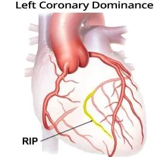
- Ưu thế động mạch vành trái
- 10% số người có động mạch vành trái ưu thế
- RIP xuất phát từ động mạch vành trái
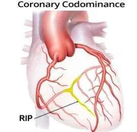
- Đồng ưu thế động mạch vành (codominance)
- 20% số người biểu hiện đồng ưu thế
- RIP nhận nguồn cấp máu kép từ cả động mạch vành trái và phải
Động mạch vành phải (RCA)
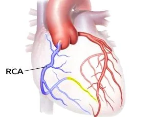
- Ở 70% số người, nó là động mạch ưu thế vì RIP xuất phát từ nó
- RIP cấp máu cho nút nhĩ thất (AV node) và bó His
- Tắc đoạn gần của động mạch vành phải ưu thế (RCA)
- Gây tổn thương thiếu máu cục bộ nút nhĩ thất
- Dẫn tới block nhĩ thất độ I (first-degree AV block)
Động mạch vành phải cấp máu cho
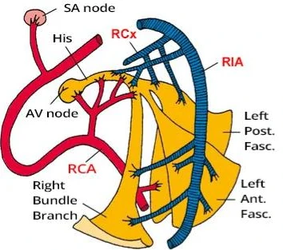
- Thất phải, trừ mỏm tim
- Mỏm tim được cấp máu bởi RIA
- Nhĩ phải
- Nón động mạch (Conus arteriosus) (một phần của đường ra thất phải – right ventricular outflow tract)
- Cùng với các nhánh từ động mạch vành trái
- Nút xoang (SA node) ở 60% số người
- 40% số người có nút xoang được cấp máu bởi RCx
- 30% thất trái ở phần sau, gần vách liên thất
- Nếu ưu thế, nó cho ra RIP cấp máu cho
- Thành dưới của tim
- 1/3 sau của vách liên thất
- Nút nhĩ thất (AV node)
- Bó His
Động mạch vành phải (phân nhánh)
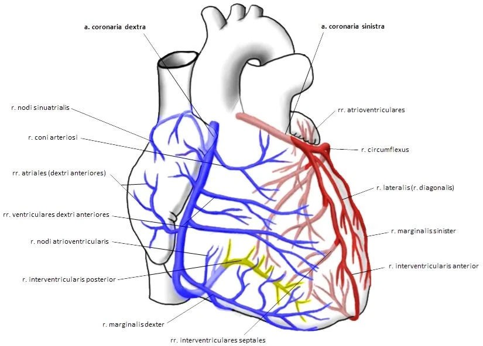
Ramus coni arteriosi
- Là nhánh đầu tiên của động mạch vành phải
- Cấp máu cho nón động mạch (conus arteriosus)
- Nón động mạch là một phần của vách liên thất ở đường ra của thất phải
- Nón động mạch còn được cấp máu bởi các nhánh của động mạch vành trái
Ramus nodi sinuatrialis
- Vòng quanh tĩnh mạch chủ trên
- Cấp máu cho nút xoang (SA node)
- 70% số người có ramus nodi sinuatrialis xuất phát từ động mạch vành phải
- 30% số người có ramus nodi sinuatrialis xuất phát từ LCx (động mạch vành trái)
Rami atriales
- Cấp máu cho nhĩ phải
Rami ventriculares dextri
- Nhóm các nhánh cấp máu cho thất phải
- Ramus ventricularis dextri anterior
- Ramus ventricularis dextri posterior
- Ramus marginalis dextri chạy dọc bờ phải của tim tới mỏm tim
- Đường đi của chúng thay đổi
- Đôi khi chúng chạy ra trước, đôi khi chạy ra sau
- Thường gặp nhất là có 2 nhánh trước và 2 nhánh sau
- Đôi khi nhánh tận cũng có thể cấp máu cho nhĩ phải
Ramus interventricularis posterior (RIP)
- 70% số người có động mạch vành phải ưu thế, vì RIP xuất phát từ nó
- Động mạch vành phải ưu thế thông qua RIP cấp máu cho
- Thành dưới của tim
- 1/3 sau của vách liên thất
- Nút nhĩ thất (AV node)
- Bó His (Bundle of His)
Động mạch vành trái (LCA)
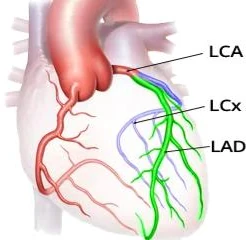
- 10% số người có động mạch vành trái ưu thế vì RIP xuất phát từ nó
- Động mạch vành trái chia nhánh thành
- Động mạch liên thất trước (Left Anterior Descending Artery – LAD)
- Đôi khi được gọi là RIA
- Động mạch mũ trái (Left Circumflex Artery – LCx)
- Động mạch liên thất trước (Left Anterior Descending Artery – LAD)
- Tim được cấp máu bởi 3 động mạch:
- Động mạch vành phải (RCA)
- Động mạch liên thất trước (LAD)
- Động mạch mũ trái (LCx)
- Tắc đoạn gần của động mạch vành trái
- Gây tổn thương thiếu máu cục bộ thất trái (nhồi máu cơ tim thất trái – left ventricular myocardial infarction)
- Nếu là động mạch ưu thế, nó còn dẫn tới tổn thương nút nhĩ thất (block nút nhĩ thất – AV node blocks)
Vùng cấp máu của nhánh liên thất trước (RIA)
- Phần quan trọng của hệ thống dẫn truyền
- Nhánh đoạn gần cấp máu cho:
- Bó His
- Phần gần của nhánh trái bó His
- RIA còn có các nhánh vách và nhánh chéo (septal and diagonal branches) cấp máu cho:
- Nhánh phải bó His
- Phân nhánh trước
- Đôi khi phần xa của RIA cũng cấp máu cho phân nhánh sau
- Tắc đoạn gần RIA có tiên lượng rất xấu và có thể gây:
- Nhồi máu STEMI
- Block nhĩ thất
- Block nhánh trái
- Tắc đoạn xa RIA có tiên lượng tốt hơn và có thể gây:
- Block nhánh phải
- Block phân nhánh trước trái (left anterior hemiblock)
- Hoặc block phân nhánh sau trái (left posterior hemiblock)
Nhánh mũ (Ramus circumflexus – RCx)
- Là nhánh lớn thứ hai của động mạch vành trái
- Với ưu thế động mạch vành trái (10% số người)
- RIA xuất phát trực tiếp từ RCx
- Bất kể ưu thế thế nào, RCx luôn cấp máu cho
- Phần bên của thất trái
- Phần sau của thất trái
- Đôi khi từ RCx cho ra ramus nodi sinuatrialis cấp máu cho nút xoang
- Phân nhánh sau được cấp máu bởi
- RIP (khi ưu thế động mạch vành phải)
- RCx
- Tổn thương thiếu máu cục bộ của phân nhánh sau rất hiếm gặp
- Phân nhánh sau có nguồn cấp máu kép và dày hơn phân nhánh trước
Động mạch vành trái (phân nhánh)
Ramus nodi sinuatrialis
- Cấp máu cho nút xoang (SA node)
- 30% số người có ramus nodi sinuatrialis xuất phát từ động mạch vành trái
- 70% số người có ramus nodi sinuatrialis xuất phát từ động mạch vành phải
Rami atrioventriculares
- Các nhánh ở chỗ nối giữa nhĩ trái và thất trái
- Cấp máu cho một phần nhĩ trái và thất trái
Ramus lateralis (diagonalis)
- Là nhánh đầu tiên của RIA
- Cấp máu cho vùng bờ của thất trái
- Các nhánh đầu tiên của RIA đôi khi được gọi là
- Rami ventriculares anteriores sinistri, trong đó ramus lateralis (diagonalis) là nhánh lớn nhất
Rami interventriculares septales anteriores
- Là các nhánh đoạn xa của RIA
- Cấp máu cho 2/3 trước của vách liên thất
- 1/3 sau được cấp máu bởi RIP
Ramus marginalis sinister
- Là nhánh của RCx
- Chạy dọc bờ trái của tim, hướng về phía mỏm tim
- Cấp máu cho bờ trái của tim
- Bờ phải của tim được cấp máu bởi ramus marginalis dexter (nhánh của động mạch vành phải)
Ramus interventricularis posterior (RIP)
- 10% số người có động mạch vành trái ưu thế (vì RIP xuất phát từ RIA)
- RCx thông qua RIP cấp máu cho
- Thành dưới của tim
- 1/3 sau của vách liên thất
- Nút nhĩ thất
- Bó His
Cấp máu động mạch của tim
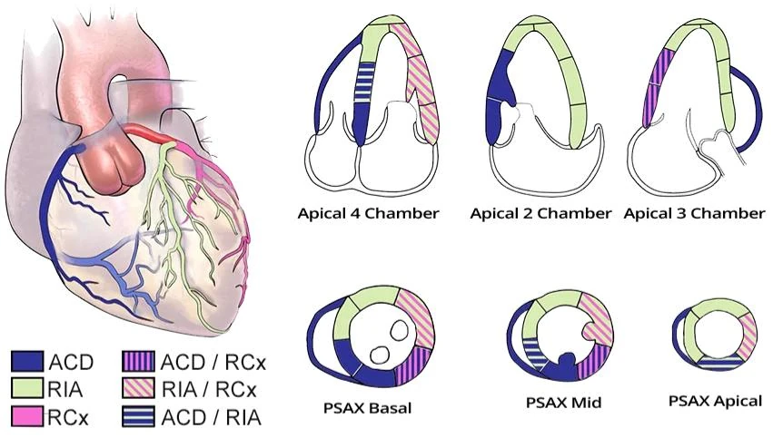
- Tim được cấp máu bởi 3 động mạch chính:
- ACD (Arteria coronaria dextra)
- RIA (Ramus interventricularis anterior)
- RCx (Ramus circumflexus)
Cấp máu động mạch của tim
- Trên các mặt cắt ngang và mặt cắt dọc, có thể thấy
- Phần nào của tim được cấp máu bởi từng động mạch
Tĩnh mạch tim và xoang vành
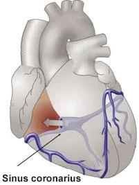
- Xoang vành (Coronary Sinus)
- Là mạch thu nhận chính cho dẫn lưu tĩnh mạch của tim
- Đổ vào nhĩ phải
- Đổ vào xoang vành có
- Vena cordis magna (dẫn lưu máu từ động mạch vành trái)
- Vena cordis media (dẫn lưu máu từ nhánh liên thất sau – ramus interventricularis posterior)
- Vena cordis parva (dẫn lưu máu từ động mạch vành phải)
BÀI 2. HỆ THỐNG DẪN TRUYỀN ĐIỆN HỌC CỦA TIM
Cơ tim hoạt động
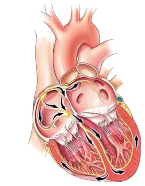
- Tim gồm 2 phần chức năng cơ bản:
- Cơ tim hoạt động (working myocardium)
- Đó là cơ tim (heart muscle)
- Chứa các tơ cơ (myofibrils — muscle fibers)
- Điện thế hoạt động (action potential) của cơ tim có 5 pha
- Xung động lan qua cơ tim hoạt động chậm
- (vì nó thiếu các liên kết khe — gap junctions)
- Khi xung động tới cơ tim, nó khởi phát co bóp
- Kết quả là tâm thu nhĩ và tâm thu thất
- Hệ thống dẫn truyền của tim
- Gồm các "dây điện"
- Dọc theo đó xung động đi từ nút xoang (SA node)
- Điện thế hoạt động của hệ thống dẫn truyền có 3 pha
- Xung động lan qua hệ thống dẫn truyền nhanh
- Vì nó chứa các liên kết khe (gap junctions)
- Qua đó các ion đi qua nhanh trong lúc dẫn truyền xung động
- Nó không có khả năng co bóp (thiếu tơ cơ)
- Gồm các "dây điện"
Đặc tính điện – cơ học của tim
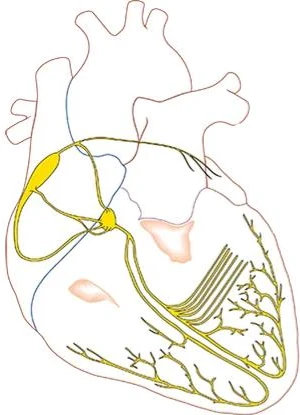
- Tính tự động (Automaticity)
- Tế bào tim tự phát sinh điện thế hoạt động (action potentials — xung động)
- Về mặt sinh lý, xung động có tần số cao nhất được phát sinh ở nút xoang
- Tim có thể đập một thời gian ngay cả khi ở ngoài cơ thể
- Tính hưng phấn (Excitability)
- Là khả năng tế bào tim đáp ứng với xung động
- Một xung động từ nút xoang hoạt hoá các tế bào lân cận
- Tính dẫn truyền (Conductivity)
- Xung động lan nhanh từ tế bào này sang tế bào khác qua hệ thống dẫn truyền
- Và sau đó chậm hơn qua cơ tim hoạt động
- Xung động do đó lan từ nút xoang
- Qua toàn bộ hệ thống dẫn truyền rồi tới cơ tim
- Xung động lan nhanh từ tế bào này sang tế bào khác qua hệ thống dẫn truyền
- Tính co bóp (Contractility)
- Là khả năng co bóp
- Đặc tính này chỉ áp dụng cho cơ tim hoạt động
- Tế bào của hệ thống dẫn truyền không co bóp
- Cơ tim hoạt động chứa các tơ cơ (myofibrils — muscle fibers)
- Khi một xung động tới cơ tim hoạt động
- Nó dẫn tới tâm thu nhĩ và tâm thu thất
Hệ thống dẫn truyền của tim
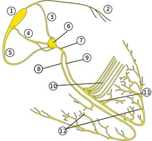
- Hệ thống dẫn truyền trên thất:
- Nút xoang nhĩ (Sinoatrial – SA Node) (1)
- Bó Bachmann (Bachmann's Bundle) (2)
- Các đường liên nút (Internodal Pathways) (3,4,5)
- Đường liên nút trước (Anterior Internodal Pathway — bó James) (3)
- Đường liên nút giữa (Middle Internodal Pathway — bó Wenckebach) (4)
- Đường liên nút sau (Posterior Internodal Pathway — bó Thorel) (5)
- Bộ nối nhĩ thất (Atrioventricular – AV Junction) (6,7)
- Nút nhĩ thất (Atrioventricular – AV Node) (6)
- Bó His (His Bundle) (7)
- Hệ thống dẫn truyền thất
- Nhánh Tawara phải (Right Tawara's Branch) (8)
- Nhánh Tawara trái (Left Tawara's Branch) (9)
- Phân nhánh sau trái (Left Posterior Fascicle) (10)
- Phân nhánh trước trái (Left Anterior Fascicle) (11)
- Sợi Purkinje (Purkinje Fibers) (12)
Nút xoang nhĩ (SA node) (1)
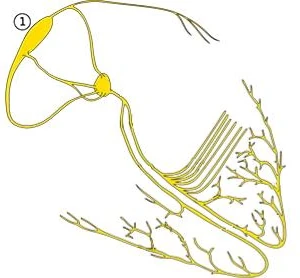
- Nằm ở nhĩ phải (kích thước 15x3mm)
- Tự phát xung động với tần số 60-100/phút
- Xung động từ nút xoang tạo ra nhịp xoang (sinus rhythm)
- Là chủ nhịp nguyên phát (primary pacemaker)
- Vì nó phát xung động với tần số cao nhất
- Mọi phần khác phát xung động với tần số thấp hơn
- Nút xoang làm bất hoạt các ổ ngoại vị (ectopic foci)
- Vốn phát xung động với tần số thấp hơn
- Ức chế vượt tần (overdrive suppression)
Bó Bachmann (2)
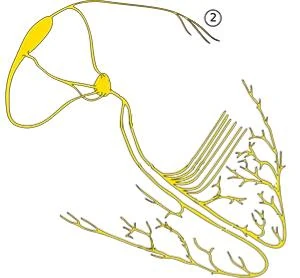
- Xuất phát từ đường liên nút trước
- Và đi tiếp tới nhĩ trái
- Chuyển xung động từ nút xoang tới cơ tim của nhĩ trái
- Bảo đảm hoạt hoá song song hai nhĩ
- Nếu bị gián đoạn, hậu quả là
- Block liên nhĩ (Interatrial Block)
Các đường liên nút (3, 4, 5)
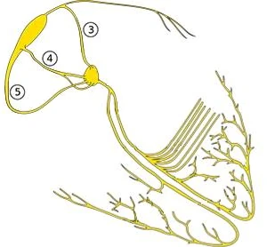
- Nút xoang và nút nhĩ thất được nối với nhau bởi 3 đường liên nút:
- Đường liên nút trước bên (Anterolateral Internodal Pathway) (bó James) (3)
- Đường liên nút giữa (Middle Internodal Pathway) (bó Wenckebach) (4)
- Đường liên nút sau (Posterior Internodal Pathway) (bó Thorel) (5)
- Điển hình, chỉ 1 đường nối vào nút nhĩ thất
- 2 đường còn lại tận cùng trong nhĩ trước khi tới nút nhĩ thất
- Chỉ 10% dân số có 2 đường nối vào nút nhĩ thất
- Nếu 2 đường cùng đi vào nút nhĩ thất, thì
- Một đường nhanh và một đường chậm
- Nút nhĩ thất luôn được hoạt hoá qua đường nhanh
- Xung động từ đường nhanh tái lập (reset) xung động từ đường chậm
- (thời kỳ trơ — refractory period — của điện thế hoạt động)
Nút nhĩ thất (AV node) (6)
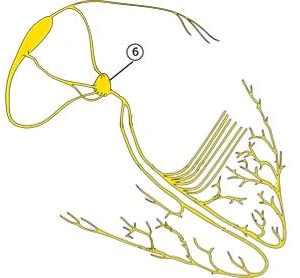
- Bộ nối nhĩ thất (AV Junction) là thuật ngữ chung để chỉ:
- Nút nhĩ thất
- Bó His
- Nút nhĩ thất là kết nối điện học duy nhất giữa nhĩ và thất
- Ngoại lệ là đường dẫn truyền phụ (accessory pathway)
- Nút nhĩ thất là chủ nhịp thứ phát (secondary pacemaker)
- Trong trường hợp rối loạn chức năng nút xoang
- Nó bắt đầu phát xung động với tần số 40-60/phút
- Xung động từ nút nhĩ thất biểu hiện trên ECG dưới dạng nhịp bộ nối (junctional rhythm)
- Nút nhĩ thất có 2 đường dẫn:
- Nhanh và chậm
- Về mặt sinh lý, xung động chỉ đi qua đường nhanh
- Nếu xung động bắt đầu quay vòng (vào lại — re-entry) qua hai đường, có thể xảy ra AVNRT
- Dẫn truyền xung động qua nút nhĩ thất có tính giảm dần (decremental — bị làm chậm)
- Rối loạn dẫn truyền có thể dẫn tới các block nhĩ thất
- Nút nhĩ thất gồm 3 phần chức năng:
- Vùng chuyển tiếp (Transient Zone)
- Bao quanh nút nhĩ thất (như một lớp vỏ)
- Cấu tạo bởi các tế bào tự động
- Là phần sinh loạn nhịp mạnh nhất của nút nhĩ thất
- Vùng đặc (Compact Zone)
- Tạo thành lõi của nút nhĩ thất
- Về mô học tương tự nút xoang
- Làm chậm dẫn truyền xung động xuống thất và đồng thời hoạt động như một bộ lọc
- Chủ nhịp thứ phát nằm ở vùng đặc
- Vùng khởi phát (Trigger Zone)
- Xung động chậm lại ở vùng đặc
- Khi tới vùng khởi phát, nó tăng tốc
- Xung động sau đó đi nhanh qua vùng khởi phát tới bó His
- Xung động chậm lại ở vùng đặc
- Vùng chuyển tiếp (Transient Zone)
Bó His (7)
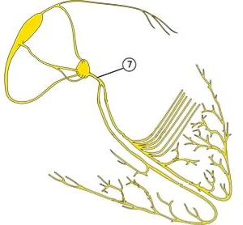
- Bắt đầu ở phần tận của nhĩ phải
- Đi xuyên qua vách nhĩ thất
- Kết thúc ở vách liên thất
- Bó His truyền xung động từ nút nhĩ thất tới các nhánh Tawara
- Xung động thoát ra từ bó His vào vách liên thất
- Trên ECG, điều này tạo ra sóng Q
Nhánh Tawara phải (8)
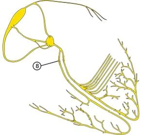
- Bắt đầu ở vùng chia đôi của bó His
- Các phần tận của nó là sợi Purkinje
- Xung động từ nhánh phải khử cực toàn bộ thất phải
- Có thể xảy ra block với block nhánh Tawara phải (RBBB)
Nhánh Tawara trái (9)
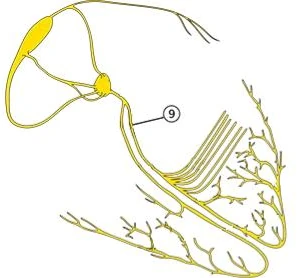
- Bắt đầu ở vùng chia đôi của bó His
- Phần tận của nó chia thành
- Phân nhánh trước trái
- Phân nhánh sau trái
- Sợi Purkinje xuất phát từ các phân nhánh
- Có thể xảy ra block với block nhánh Tawara trái (LBBB)
Phân nhánh sau trái (10)
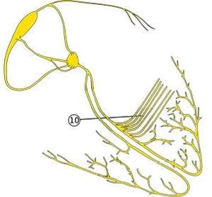
- Bắt đầu ở chỗ chia đôi của nhánh Tawara trái
- Kết thúc ở phần sau của thất trái
- Hoạt hoá phần sau và phần trên của thất trái
- Phân nhánh sau trái không phải là một cấu trúc đơn nhất
- Nó gồm một nhóm các phân nhánh song song
- Khi bị gián đoạn, xảy ra block phân nhánh sau trái
- Rất hiếm gặp (vì phải gián đoạn toàn bộ các phân nhánh)
- Tình trạng thường gặp hơn nhiều là block phân nhánh trước trái
Phân nhánh trước trái (11)
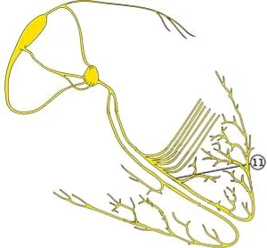
- Bắt đầu ở chỗ chia đôi của nhánh Tawara trái
- Kết thúc ở phần trước của thất trái
- Hoạt hoá phần dưới và phần trước của thất trái
- Phân nhánh trước trái là một cấu trúc đơn nhất
- Block phân nhánh trước trái
- Thường gặp hơn block phân nhánh sau trái
- Vì chỉ cần một phân nhánh trước bị gián đoạn là đã xảy ra block
Sợi Purkinje (12)
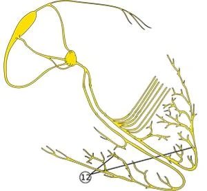
- Tạo thành một mạng lưới sợi dày đặc trong các thất
- Là các phần cuối cùng của hệ thống dẫn truyền trong thất, chủ yếu xuất phát từ
- Nhánh phải bó His
- Phân nhánh sau trái
- Phân nhánh trước trái
- Các sợi truyền xung động tới lớp dưới nội tâm mạc (subendocardium)
- Sợi Purkinje đóng vai trò chủ nhịp tam phát (tertiary pacemaker)
- Hoạt động khi có rối loạn chức năng nút xoang và nút nhĩ thất
- Phát xung động với tần số 20-40/phút
- Trên ECG, điều này tạo ra nhịp thất (ventricular rhythm)
BÀI 3. ĐIỆN THẾ HOẠT ĐỘNG
Cơ tim hoạt động
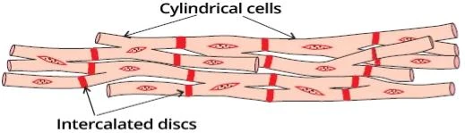
Tế bào cơ tim của cơ tim hoạt động
- Tế bào cơ tim (cardiomyocyte) trong cơ tim hoạt động có hình trụ (kéo dài)
- Chúng phân nhánh, với 2 nhánh trở lên ở hai đầu, nối với các tế bào cơ tim khác
- Chúng nối với nhau bằng các đĩa gian bào (intercalated discs)
- Đĩa gian bào chứa các liên kết khe (gap junctions — nexus) qua đó ion đi lại tự do
- Nhờ vậy, điện thế hoạt động lan rất nhanh qua các tế bào cơ tim
- Các tế bào cơ tim tạo thành một hợp bào (syncytium)
- Đó là một cấu trúc đa bào hình thành do sự hoà nhập của nhiều tế bào
- Về nguyên tắc, đó là một cấu trúc đa bào có bào tương dùng chung
- Chúng chứa troponin, được giải phóng khi tế bào bị tổn thương — hoại tử (trong nhồi máu cơ tim)
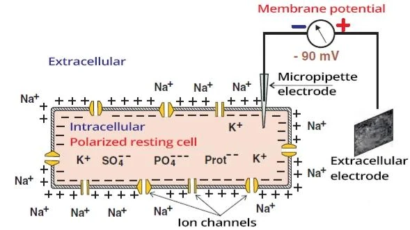
Tế bào cơ tim và điện thế màng lúc nghỉ
- Tế bào cơ tim có các kênh ion chọn lọc trên màng, qua đó ion đi qua
- Các phân tử lớn như SO₄²⁻, PO₄³⁻ và Protein⁻
- Không đi qua được màng, ở lại trong tế bào và mang điện tích âm
- Các ion Na⁺, K⁺, Ca²⁺, Cl⁻ đi qua các kênh ion
- Lúc nghỉ, ion được vận chuyển tích cực bằng năng lượng ATP qua bơm Na⁺/K⁺ (natri – kali)
- Na⁺ ra khỏi tế bào (nồng độ Na⁺ ngoài tế bào là 145mmol/)
- K⁺ vào trong tế bào (nồng độ K⁺ ngoài tế bào là 4mmol/)
- Kết quả của vận chuyển tích cực là nồng độ Na⁺ ngoài tế bào cao
- Natri là cation ngoại bào chính
- Điện thế màng lúc nghỉ (Resting Membrane Potential)
- Là hiệu điện thế giữa khoang trong tế bào và khoang ngoài tế bào
- Được đo bằng vôn kế với một điện cực trong tế bào và một điện cực ngoài tế bào
- Khoang trong tế bào mang điện âm, khoang ngoài tế bào mang điện dương
- Hiệu điện thế là -90mV
- Sự phân bố ion không đều này được duy trì tích cực bởi bơm Na⁺/K⁺
Điện thế hoạt động
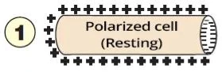
- Là sự thay đổi nhanh điện thế của tế bào cơ tim
- Nó phát sinh do thay đổi nồng độ các ion trong và ngoài tế bào
- Điện thế hoạt động lan nhanh hơn qua hệ thống dẫn truyền so với qua cơ tim hoạt động
- Nó bao gồm khử cực (depolarization) — đảo ngược tính phân cực của màng
- Sau đó xảy ra tái cực (repolarization) — trở về trạng thái ban đầu
Điện thế màng lúc nghỉ
- Lúc nghỉ, tế bào cơ tim ở trạng thái phân cực
- Khoang ngoài tế bào mang điện dương
- Do nồng độ Na⁺ ngoài tế bào cao
- Khoang trong tế bào mang điện âm
- Hiệu điện thế (trong so với ngoài tế bào) là -90mV
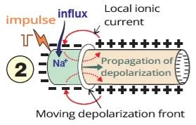
Khử cực
- Khi tế bào cơ tim bị kích thích bởi một xung điện âm
- Từ các tế bào lân cận (xung động phát sinh tự phát ở nút xoang)
- Từ điện cực của máy tạo nhịp tim
- Điều này mở các kênh ion Na⁺
- Tiếp theo là dòng Na⁺ đi vào trong tế bào theo gradient điện
- Gây thay đổi điện thế
- Vì nồng độ Na⁺ trong tế bào tăng lên
- Khi điện thế màng đạt tới điện thế ngưỡng (-50mV)
- Các kênh natri nhanh bổ sung mở ra
- Kết quả là khử cực
- Nó bao gồm đảo ngược tính phân cực của màng
- Khoang ngoài tế bào trở nên âm
- Khoang trong tế bào trở nên dương do dòng Na⁺ đi vào
- Khử cực lan từ vị trí hoạt hoá dưới dạng sóng khử cực
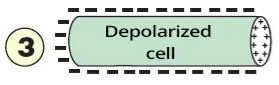
Tế bào cơ tim đã khử cực
- Môi trường ngoài tế bào mang điện âm
- Sóng khử cực dần dần khử cực toàn bộ tế bào cơ tim
- Sau đó nó tiếp tục sang các tế bào cơ tim lân cận
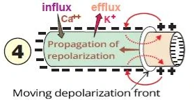
Tái cực
- Ở cuối giai đoạn khử cực, lại có sự di chuyển ion qua các kênh
- Chủ yếu là các ion Ca²⁺ và K⁺
- Điều này dẫn tới trở về trạng thái phân cực ban đầu
- Sóng tái cực lan chậm và ngược chiều với khử cực
- Trong cơ tim, thượng tâm mạc bắt đầu tái cực sớm hơn nội tâm mạc
- Môi trường ngoài tế bào lại chuyển thành dương
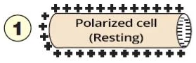
Điện thế màng lúc nghỉ
- Trong điện thế hoạt động, các kênh chuyên biệt mở ra ở những thời điểm chuyên biệt
- Sự vận chuyển ion là thụ động, theo gradient điện
- Ở cuối chu kỳ, chủ yếu bơm Na⁺/K⁺ tái phân bố các ion về trạng thái ban đầu
Sự lan truyền điện thế hoạt động
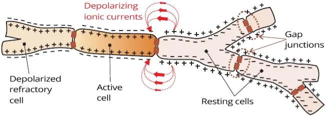
Tế bào cơ tim của cơ tim hoạt động
- Chúng phân nhánh và nối với nhau theo chiều dọc bằng các đĩa gian bào
- Bào tương của các tế bào cơ tim thông với nhau qua đĩa gian bào
- Toàn bộ sợi cơ hoạt động như một tế bào dài duy nhất (hợp bào)
- Sóng khử cực lan khắp cơ tim như thể qua một tế bào duy nhất
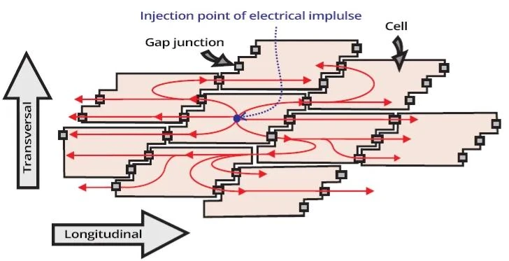
Cơ tim hoạt động
- Hình cho thấy một lát cắt của cơ tim hoạt động
- Các tế bào cơ tim nối với nhau theo chiều dọc bằng đĩa gian bào
- Trong các đĩa có các liên kết khe,
qua đó ion có thể đi qua
- Trong các đĩa có các liên kết khe,
- Khi một tế bào cơ tim bị kích thích bởi một xung động, điện thế hoạt động lan sang các tế bào lân cận
- Giống như ném một hòn đá xuống nước
(từ tâm lan ra)
- Giống như ném một hòn đá xuống nước
- Tuy nhiên, điện thế hoạt động lan:
- Nhanh — theo chiều dọc
- Chậm — theo chiều ngang
- Vì đĩa gian bào nằm ở các mặt bên của tế bào cơ tim
Điện thế hoạt động và hiệu điện thế
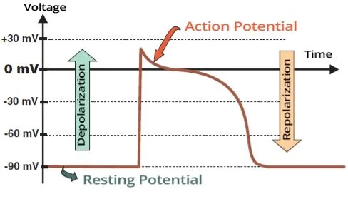
- Volt là hiệu điện thế giữa 2 điểm
- Điểm thứ 1 là môi trường trong tế bào
- Điểm thứ 2 là môi trường ngoài tế bào
- Điện thế màng lúc nghỉ
- Có giá trị -90mV
- Tế bào mang điện âm ở phía trong
- Tế bào cơ tim đã khử cực
- Có giá trị 15mV
- Tế bào mang điện dương ở phía trong
- Trong điện thế hoạt động
- Có sự thay đổi phân bố ion
- Và do đó, thay đổi hiệu điện thế
Điện thế hoạt động và sự co bóp của tế bào cơ tim
- Điện thế hoạt động trong cơ tim hoạt động
- Khởi phát sự co bóp lần lượt của tất cả các tế bào cơ tim
- Vì cơ tim hoạt động là một hợp bào
- Điện thế hoạt động phát sinh tự phát
- Ở nút xoang, rồi lan qua hệ thống dẫn truyền
- Từ hệ thống dẫn truyền, nó đi sang cơ tim hoạt động
- Kết quả là tâm thu nhĩ rồi tâm thu thất
Điện thế hoạt động trong hệ thống dẫn truyền
- Điện thế hoạt động (xung động) phát sinh tự phát ở nút xoang
- Với tần số khoảng 60/phút
- Từ nút xoang, nó bắt đầu hoạt hoá cơ tim nhĩ
- Lan như ném một hòn đá xuống nước
- Từ nút xoang lan toả vào hai nhĩ (sóng P)
- Kết quả là tâm thu nhĩ
- Lan như ném một hòn đá xuống nước
- Xung động đồng thời lan nhanh qua hệ thống dẫn truyền tới nút nhĩ thất
- Từ nút nhĩ thất tới bó His và tới các thất
- Trước tiên hoạt hoá vách liên thất (sóng Q), rồi tới các thất (sóng R)
- Hệ thống dẫn truyền
- Phát xung động tự phát ở nút xoang
- Không co bóp
- Dẫn truyền xung động nhanh
- Xung động lan từ hệ thống dẫn truyền sang cơ tim hoạt động
- Cơ tim hoạt động
- Không phát xung động tự phát
- Co bóp
- Mỗi xung động khởi phát một kỳ tâm thu
- Dẫn truyền xung động chậm hơn hệ thống dẫn truyền
Điện thế hoạt động ở nút xoang
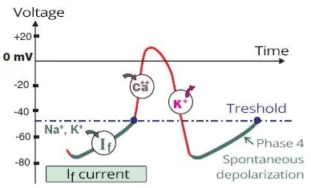
- Các tế bào của cơ tim hoạt động khử cực
- Chỉ khi được hoạt hoá bởi một xung động từ bên ngoài
- Các tế bào của nút xoang khử cực tự phát
- Vì chúng có các kênh I_f
- Qua đó các ion Na⁺ và K⁺ đi vào một cách tự phát
- Tạo ra cái gọi là dòng I_f (funny current)
- Khi điện thế hoạt động đạt tới giá trị ngưỡng (-50mV)
- Các kênh Ca²⁺ nhanh mở ra
- Khử cực hoàn toàn khởi phát
- Trong tái cực, các ion K⁺ đi ra khỏi tế bào
- Tế bào trở về trạng thái nghỉ
- Và các kênh I_f lại bắt đầu tự phát mở ra
- Sự tái phân bố ion ở cuối chu kỳ được duy trì bởi
- Chủ yếu là bơm Na⁺/K⁺
Kênh I_f và tần số tim
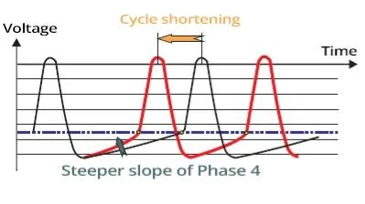
- Các kênh I_f ở nút xoang khử cực tự phát và quyết định tần số tim
- Tốc độ khử cực của chúng chịu ảnh hưởng của hệ thần kinh tự chủ
- Hoạt hoá hệ giao cảm giải phóng catecholamine (adrenaline, noradrenaline)
- Tốc độ khử cực tăng nếu độ dốc trong giai đoạn dòng I_f dốc hơn
- Điều này giúp đường cong đạt tới giá trị ngưỡng (-50mV) sớm hơn
Kích thích nút xoang
- Nút xoang được kích thích bởi hệ thần kinh giao cảm
- Các kênh I_f cho ion đi qua nhanh hơn
- Đường cong dòng I_f của điện thế hoạt động trở nên dốc hơn
- Pha 4 của điện thế hoạt động được rút ngắn
- Tần số tim tăng
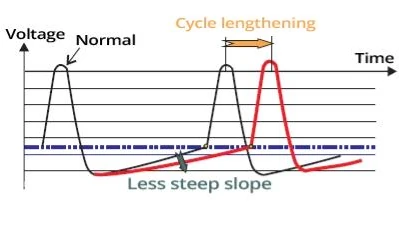
Ức chế nút xoang
- Ví dụ như một số thuốc
- Đường cong dòng I_f của điện thế hoạt động trở nên thoải hơn
- Pha 4 của điện thế hoạt động kéo dài
- Tần số tim giảm
Cơ tim hoạt động so với nút xoang
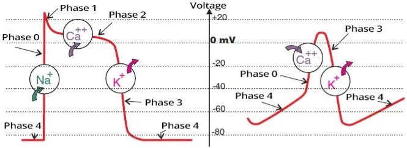
- Điện thế hoạt động của cơ tim hoạt động và của hệ thống dẫn truyền có hình dạng khác nhau
- Vì các tế bào cơ tim ở những phần này của tim có các kênh ion khác nhau
- Và do đó có đặc tính điện học và cơ học khác nhau
- Điện thế hoạt động ở cơ tim hoạt động
- Các pha: 4, 0, 1, 2, 3
- Khởi phát sự co bóp của tế bào cơ tim
- Điện thế hoạt động ở hệ thống dẫn truyền
- Các pha: 4, 0, 3
- Xảy ra tự phát (do các dòng I_f)
Điện thế hoạt động ở cơ tim hoạt động
- Các pha: 4, 0, 1, 2, 3
Điện thế hoạt động ở nút xoang
- Các pha: 4, 0, 3
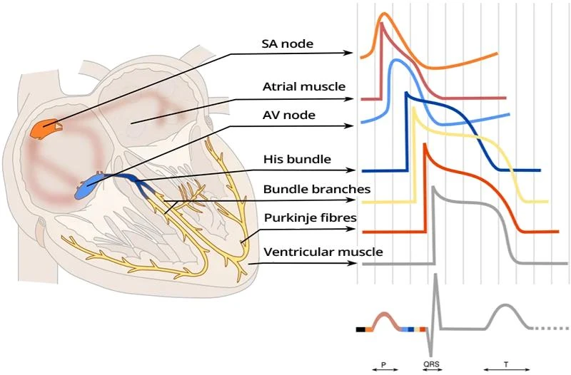
Điện thế hoạt động ở các phần khác nhau của tim
- Điện thế hoạt động ở các phần khác nhau của tim có hình dạng khác nhau
- Nó khác nhau đặc biệt giữa hệ thống dẫn truyền và cơ tim hoạt động
- Do đặc tính riêng biệt của các tế bào cơ tim
- Điện thế hoạt động (xung động) của cơ tim hoạt động được máy ECG ghi lại và tạo ra dạng sóng ECG
Sự ức chế hệ thống dẫn truyền
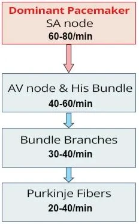
- Hệ thống dẫn truyền phát xung động tự phát
- Xung động có tần số cao nhất được phát bởi nút xoang (60-80/phút)
- Nút xoang được gọi là chủ nhịp chiếm ưu thế (nguyên phát)
- Nếu nút xoang không phát được xung động do rối loạn chức năng
- Các trung tâm thấp hơn của hệ thống dẫn truyền được hoạt hoá
- Vốn phát xung động với tần số thấp hơn
- Sự ức chế hệ thống dẫn truyền nghĩa là
- Xung động luôn lan qua hệ thống dẫn truyền từ vị trí
- Phát xung động với tần số cao nhất
- Vị trí có tần số cao nhất làm bất hoạt các vị trí
- Phát xung động với tần số thấp hơn
- Hiện tượng này còn được gọi là ức chế vượt tần (overdrive suppression)
- Xung động luôn lan qua hệ thống dẫn truyền từ vị trí
ECG và điện thế hoạt động
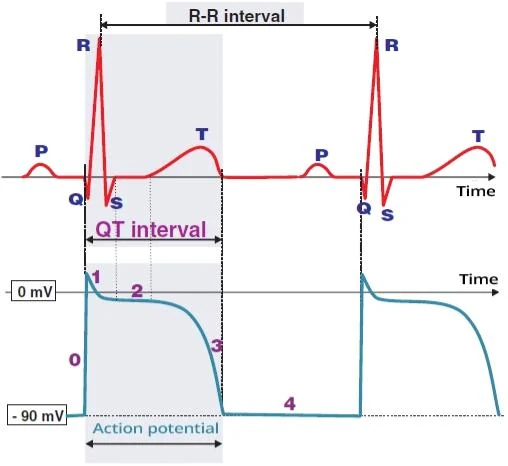
ECG (chuyển đạo V6) và điện thế hoạt động
- Phức bộ QRS thể hiện khử cực thất
- Trong phức bộ QRS, một sóng khử cực lan qua các thất
- Đoạn ST là một đường đẳng điện
- Trong pha thứ hai của điện thế hoạt động, toàn bộ thành cơ tim đều khử cực (-), không hình thành vector điện học nào
- Sóng T thể hiện tái cực thất
- Vector điện học trong tái cực có cùng chiều với trong khử cực
- Tuy nhiên, tái cực kéo dài hơn,
do đó sóng T rộng hơn phức bộ QRS
- Khoảng QT tương ứng với 1 chu chuyển điện học của tim:
- Khử cực thất + tái cực thất
- Sóng P thể hiện khử cực nhĩ
- Điện thế hoạt động của sóng P không được trình bày trên hình
- Tái cực nhĩ bị che khuất trong phức bộ QRS
ECG và chu chuyển tim
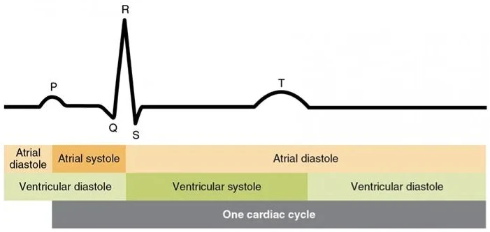
ECG và chu chuyển tim
- Điện thế hoạt động được phản ánh trên đường cong ECG
- Và có thể nhận ra các phần khác nhau của chu chuyển tim dựa trên đường cong ECG
BÀI 4. VECTOR ĐIỆN HỌC CỦA TIM
Cơ tim hoạt động
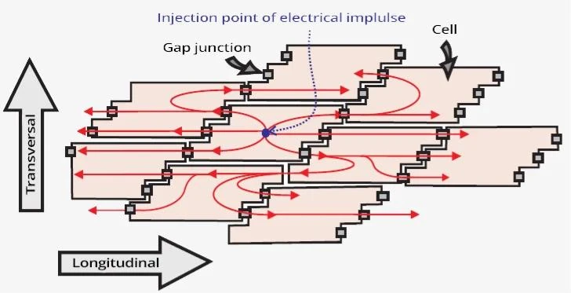
Điện thế hoạt động và cơ tim hoạt động
- Trên hình là các tế bào cơ tim của cơ tim hoạt động.
- Lúc nghỉ, tất cả tế bào cơ tim đều ở trạng thái phân cực.
- Do phân bố ion không đều, môi trường ngoài tế bào mang điện tích dương.
- Ngoài tế bào có nồng độ ion Na⁺ cao.
- Do phân bố ion không đều, môi trường ngoài tế bào mang điện tích dương.
- Các tế bào cơ tim tạo thành một hợp bào (syncytium).
- Chúng nối với nhau bằng các đĩa gian bào,
qua đó ion di chuyển nhanh.
- Chúng nối với nhau bằng các đĩa gian bào,
- Khi một tế bào cơ tim bị kích thích bởi một xung động, điện thế hoạt động lan sang các tế bào lân cận.
- Giống như ném một hòn đá xuống nước (từ tâm lan ra).
- Các tế bào cơ tim khử cực.
- Môi trường ngoài tế bào trở nên âm.
- Điện thế hoạt động lan:
- Nhanh — theo chiều dọc
- Chậm — theo chiều ngang
- Vì đĩa gian bào nằm ở các mặt bên của tế bào cơ tim.
Sự lan truyền điện thế hoạt động
Sự lan truyền điện thế hoạt động
- Điện thế hoạt động phát sinh tự phát ở nút xoang
- Sau đó nó lan nhanh qua hệ thống dẫn truyền tới cơ tim hoạt động (hai nhĩ và hai thất)
- Trong quá trình điện thế hoạt động lan qua cơ tim hoạt động, xuất hiện một sóng khử cực (sóng màu xanh trong video)
- Sóng khử cực (môi trường ngoài tế bào trở nên âm) lan qua cơ tim theo thứ tự sau:
- Hai nhĩ (sóng P)
- Vách liên thất (sóng Q)
- Cơ thất (sóng R)
- Đáy thất trái (sóng S)
- Sau khử cực là tái cực thất (môi trường ngoài tế bào trở nên dương)
- Tái cực thất (sóng màu đỏ trong video) tiến triển từ thượng tâm mạc tới nội tâm mạc (sóng T)
- Tái cực nhĩ không nhìn thấy được trên ECG
- Nguyên lý của đường cong ECG rất đơn giản, nếu khử cực hướng: (sóng màu xanh trong video)
- Về phía chuyển đạo ECG — tạo ra một sóng dương
- Ra xa chuyển đạo ECG — tạo ra một sóng âm
- Tái cực thất (sóng màu đỏ trong video)
- Tiến triển ra xa các chuyển đạo ECG và tạo ra sóng T dương
- Vì khử cực và tái cực có cùng chiều điện học
- Tiến triển ra xa các chuyển đạo ECG và tạo ra sóng T dương
Vector điện học và ECG
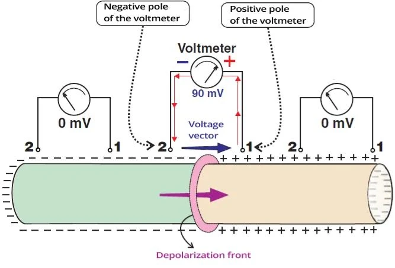
Cơ tim hoạt động và vector điện học
- Hình cho thấy một phần của cơ tim hoạt động (không phải một tế bào cơ tim đơn lẻ)
- Volt là hiệu điện thế giữa 2 điện cực
- Máy ECG có các điện cực trên bề mặt cơ thể
- Vôn kế chỉ ra hiệu điện thế nếu:
- Một điện cực nằm trên phần đã khử cực (-)
- Điện cực kia nằm trên phần đã tái cực (+) của cơ tim
- Máy ECG hiển thị volt dưới dạng các sóng và các nhánh
- Một điện cực nằm trên phần đã khử cực (-)
- Vôn kế chỉ giá trị 0 mV
- Nếu cả hai điện cực đều nằm trên cơ tim đã khử cực (-) hoặc đã tái cực (+)
- Vôn kế chỉ 0mV vì không có hiệu điện thế giữa hai điện cực
- Trên ECG, đó là đường đẳng điện
- Vector điện học
- Luôn hướng từ phần ngoại bào âm (-) sang phần ngoại bào dương (+) của cơ tim
- Nếu vector điện học hướng
- Về phía chuyển đạo ECG — nó tạo ra một sóng dương
- Ra xa chuyển đạo ECG — nó tạo ra một sóng âm
Khử cực và ECG
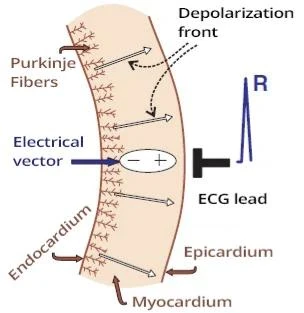
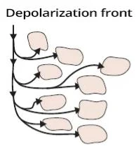
Sự lan truyền sóng khử cực và ECG
- Sóng khử cực (ngoài tế bào chuyển từ + sang -) lan trong thành cơ tim từ nội tâm mạc ra thượng tâm mạc
- Vector điện học luôn hướng từ phần (-) sang phần (+) của cơ tim
- Sóng khử cực lan rất nhanh
- Vì các kênh natri mở nhanh ở đầu điện thế hoạt động trong tế bào cơ tim
- Sóng khử cực hướng về phía điện cực ECG
- Tạo ra một sóng dương hẹp
- Sóng hẹp vì khử cực diễn ra rất nhanh
- Bề rộng của sóng R thể hiện khoảng thời gian hai thất khử cực
Tái cực và ECG
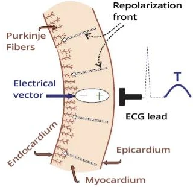
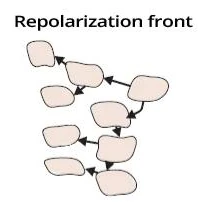
Sự lan truyền sóng tái cực và ECG
- Sóng tái cực (ngoài tế bào chuyển từ - sang +) lan trong thành cơ tim từ thượng tâm mạc vào nội tâm mạc
- Vì thượng tâm mạc bắt đầu tái cực sớm hơn
- Sóng có chiều ngược lại so với khử cực
- Tuy nhiên, vector điện học luôn hướng từ phần (-) sang phần (+) của cơ tim
- Vector điện học có cùng chiều trong cả khử cực lẫn tái cực
- Sóng tái cực lan chậm
- Vì các kênh canxi và kali mở chậm ở cuối điện thế hoạt động trong tế bào cơ tim
- Sóng tái cực hướng ra xa điện cực ECG, nhưng vector điện học lại hướng về phía điện cực ECG
- Tái cực diễn ra chậm hơn, tạo ra sóng T rộng
- Bề rộng của sóng T thể hiện khoảng thời gian hai thất tái cực
Khử cực và tái cực cơ tim
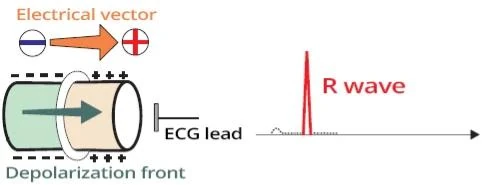
Khử cực và tái cực cơ tim
- Sóng khử cực và sóng tái cực có chiều ngược nhau
- Tuy nhiên, vector điện học luôn có cùng chiều
- Khử cực diễn ra nhanh
- Tạo ra sóng R hẹp
- Tái cực diễn ra chậm hơn
- Tạo ra sóng T rộng
Điện thế hoạt động ở nội tâm mạc và thượng tâm mạc
Điện thế hoạt động ở nội tâm mạc và thượng tâm mạc
- Điện thế hoạt động của tế bào cơ tim ở nội tâm mạc và thượng tâm mạc có đặc tính điện học khác nhau
- Hệ thống dẫn truyền hoạt hoá cơ tim ở nội tâm mạc
- Do đó, khử cực bắt đầu ở nội tâm mạc
- Khử cực ở nội tâm mạc và thượng tâm mạc gần như đồng bộ
- Vì vậy, sóng khử cực lan nhanh qua thành cơ tim
- Tế bào cơ tim ở thượng tâm mạc bắt đầu tái cực sớm hơn so với ở nội tâm mạc
- Do đó, sóng tái cực bắt đầu ở thượng tâm mạc
- Tuy nhiên, vector điện học của khử cực và tái cực lại có cùng chiều
Điện thế hoạt động và sự co bóp của tế bào cơ tim
- Video cho thấy một tế bào cơ tim của cơ tim hoạt động
- Được kích thích bởi một xung động từ một điện cực
- Điện thế hoạt động trong cơ tim hoạt động
- Gây co bóp lần lượt của tất cả các tế bào cơ tim
- Vì cơ tim hoạt động là một hợp bào
- Điện thế hoạt động được phát sinh tự phát
- Ở nút xoang, rồi lan qua hệ thống dẫn truyền
- Từ hệ thống dẫn truyền, nó chuyển sang cơ tim hoạt động
- Nó tạo ra tâm thu nhĩ rồi tâm thu thất
Vector chính của thất
Vector chính của thất
- Hai thất khử cực lần lượt
- Vách liên thất (sóng Q)
- Hai thất (sóng R)
- Đáy thất trái (sóng S)
- Sóng khử cực có chiều nhất định và lần lượt khử cực toàn bộ hai thất
- Chiều của vector điện học tổng hợp thay đổi trong quá trình khử cực
- Đường cong ECG cho thấy vector điện học tổng hợp theo thời gian
- Ở thời điểm 50ms, thất trái và thất phải được hoạt hoá đồng bộ
- Các vector điện học phân kỳ khỏi nhau
- Vector thất trái lớn hơn (do thất trái có khối cơ lớn hơn)
- Do đó vector tổng hợp của khử cực thất hướng về phía thất trái
- Vector chính của tim
- Là vector điện học của khử cực thất trái (và thất phải)
- Vector thất phải nhỏ và ít ảnh hưởng tới chiều của vector thất trái
- Nó lớn nhất và tạo ra sóng R trên ECG
- Là vector điện học của khử cực thất trái (và thất phải)
- Độ lớn và chiều của các vector theo thời gian tạo thành vectorcardiogram
Các vector của thất
- Trước tiên, vách liên thất mỏng được hoạt hoá
- Tạo ra một vector vách nhỏ (V_S)
- Sau đó, thất trái có khối cơ lớn được hoạt hoá
- Tạo ra một vector chính lớn (V_H)
- Đồng thời, thất phải mỏng cũng được hoạt hoá
- Vector thất phải nhỏ
- Không ảnh hưởng tới chiều của vector chính
- Cuối cùng, đáy thất trái được hoạt hoá
- Tạo ra một vector tận nhỏ (V_T)
- Phải hình dung các vector trong không gian 3 chiều
- Các chuyển đạo ECG ghi lại các vector theo thời gian
ECG và các vector của thất
- Hai thất được hoạt hoá lần lượt:
- Vách liên thất (V_S — vector vách)
- Thất trái và thất phải (V_M — vector chính)
- Đáy thất trái (V_T — vector tận)
- Phức bộ QRS xuất hiện khác nhau ở mỗi chuyển đạo
- Vì mỗi chuyển đạo "nhìn" các vector từ một góc khác nhau
- Nếu vector hướng
- Về phía chuyển đạo — tạo ra một sóng dương
- Ra xa chuyển đạo — tạo ra một sóng âm
- Khử cực thất (phức bộ QRS) được trình bày trên các hình
Các chuyển đạo chi
- "Nhìn" các vector trong mặt phẳng trán
Các chuyển đạo trước tim
- "Nhìn" các vector trong mặt phẳng ngang
Nhịp xoang
- ECG cho thấy một nhịp xoang
- Chú ý cách biên độ của phức bộ QRS thay đổi ở các chuyển đạo khác nhau
- Các vector ở hai nhĩ tạo ra sóng P
- Các vector ở hai thất tạo ra phức bộ QRS và sóng T
BÀI 5. TIM VÀ ECG
Tim và hệ tuần hoàn
- Tim là một cái bơm bơm máu đồng bộ vào 2 vòng tuần hoàn
- Vào vòng tuần hoàn nhỏ (tới phổi)
- Vào vòng tuần hoàn lớn (tuần hoàn hệ thống)
- Tim với vai trò cái bơm có 2 phần:
- Tim phải (thất phải + nhĩ phải)
- Tim trái (thất trái + nhĩ trái)
- Vào nhĩ phải (RA)
- Máu khử oxy chảy vào từ vòng tuần hoàn lớn qua
- Tĩnh mạch chủ trên (Vena cava superior — VCS)
- Tĩnh mạch chủ dưới (Vena cava inferior — VCI)
- Và từ tim qua xoang vành
- Rồi máu đi tiếp qua van ba lá (TV)
- Vào thất phải
- Máu khử oxy chảy vào từ vòng tuần hoàn lớn qua
- Thất phải (RV)
- Bơm máu lên phổi qua van động mạch phổi (PV)
- Vào nhĩ trái (LA)
- Máu giàu oxy chảy vào từ phổi
- Rồi máu đi tiếp qua van hai lá (MV)
- Vào thất trái
- Thất trái (LV)
- Bơm máu vào vòng tuần hoàn lớn qua van động mạch chủ (AoV)
Hệ thống dẫn truyền của tim
- Tim có 2 phần chức năng cơ bản:
- Hệ thống dẫn truyền
- Đó là những "dây điện" mảnh dẫn xung động khắp tim
- Xung động phát sinh tự phát ở nút xoang
- Chúng lan khắp tim và hoạt hoá cơ tim hoạt động
- Cơ tim hoạt động
- Đó là cơ tim, co bóp khi bị xung động kích thích
- Kết quả là tâm thu nhĩ, tiếp theo là tâm thu thất
- Hệ thống dẫn truyền
- Máy ECG có các điện cực được gắn lên cơ thể
- ECG ghi nhận sự lan truyền của xung điện qua tim
- ECG không ghi lại hoạt động cơ học của tim (tâm thu và tâm trương)
ECG và xung điện
- Đường cong ECG thể hiện sự lan truyền của xung động qua tim
- Một xung động lan
- Nhanh qua hệ thống dẫn truyền
- Chậm qua cơ tim hoạt động
- Vốn sau đó co bóp, tạo ra kỳ tâm thu
- Đường cong ECG chủ yếu cho thấy:
- Sự lan truyền chậm của xung động trong cơ tim hoạt động
- Xung động tạo ra một vector tim trong cơ tim hoạt động
- Hoạt động điện học ở cơ tim nhĩ tạo ra:
- Sóng P (khử cực nhĩ)
- Sóng Ta (tái cực nhĩ)
- Vốn bị che khuất trong phức bộ QRS
- Hoạt động điện học ở cơ tim thất tạo ra
- Phức bộ QRS (khử cực thất)
- Sóng T (tái cực thất)
Vector chính của tim
- Xung động hoạt hoá hai nhĩ từ nút xoang
- Kết quả là hình thành sóng P
- Xung động sau đó đi tới hai thất qua nút nhĩ thất
- Và bắt đầu hoạt hoá dần dần cơ thất
- Khối cơ tim càng lớn
- Thì vector tim càng lớn
- Trước tiên, vách liên thất mỏng được hoạt hoá
- Tạo ra một vector vách nhỏ (V_S)
- Tiếp theo, thất trái có khối cơ lớn được hoạt hoá
- Tạo ra vector chính lớn (V_M)
- Đồng thời, thất phải mỏng cũng được hoạt hoá
- Tạo ra một vector thất phải nhỏ
- Vốn không ảnh hưởng tới chiều của vector chính
- Cuối cùng, đáy thất trái được hoạt hoá
- Tạo ra một vector tận nhỏ (V_T)
Các chuyển đạo ECG
- Bản ghi ECG có 12 chuyển đạo
- Các chuyển đạo trước tim (V1-V6)
- Các chuyển đạo chi (I, II, III, aVR, aVF, aVL)
- Mỗi chuyển đạo "nhìn" các vector từ một góc khác nhau
- Nguyên lý của đường cong ECG là:
- Nếu vector hướng
- Về phía chuyển đạo — ghi được một sóng dương
- Ra xa chuyển đạo — ghi được một sóng âm
- Nếu vector hướng
- Cần hình dung các vector và các chuyển đạo trong không gian 3 chiều
- Các chuyển đạo ghi lại các vector theo thời gian
ECG và vector của tim
- Hai thất được hoạt hoá lần lượt:
- Vách liên thất (V_S — vector vách)
- Thất trái và thất phải (V_M — vector chính)
- Đáy thất trái (V_T — vector tận)
- Phức bộ QRS trông khác nhau ở mỗi chuyển đạo
- Vì mỗi chuyển đạo "nhìn" các vector từ một góc khác nhau
- Nếu vector hướng
- Về phía chuyển đạo — ghi được một sóng dương
- Ra xa chuyển đạo — ghi được một sóng âm
- Các hình cho thấy khử cực thất (phức bộ QRS)
Các chuyển đạo chi
- "Nhìn" các vector trong mặt phẳng trán
Các chuyển đạo trước tim
- "Nhìn" các vector trong mặt phẳng ngang
Nhịp xoang
- Trên ECG có nhịp xoang
- Chú ý cách biên độ của phức bộ QRS thay đổi giữa các chuyển đạo khác nhau
- Các vector ở hai nhĩ tạo ra sóng P
- Các vector ở hai thất tạo ra phức bộ QRS và sóng T
ECG chẩn đoán được những gì?
- ECG ghi lại các vector của tim (tần số và độ lớn của chúng)
- Dựa vào ECG, có thể xác định được:
- Tần số tim
- Tính bằng các phức bộ QRS
- Nhịp nhanh (tần số > 100/phút)
- Nhịp chậm (tần số < 50/phút)
- Nhịp tim
- Được xác định theo nguồn gốc của các xung động điều khiển tim
- Nhịp xoang (xung động phát sinh ở nút xoang)
- Nhịp bộ nối (xung động phát sinh ở nút nhĩ thất)
- Nhịp thất (xung động phát sinh ở hai thất)
- Hướng của tim
- Phân tích vector có thể xác định hướng của tim trong mặt phẳng ngang và mặt phẳng trán
- Vùng chuyển tiếp (cho biết hướng của tim trong mặt phẳng ngang)
- Trục điện tim chính (cho biết hướng của tim trong mặt phẳng trán)
- Bề dày các buồng tim
- Cơ tim dày hơn tạo ra vector lớn hơn và sóng lớn hơn trên ECG
- P phế (P pulmonale — phì đại nhĩ phải)
- P hai lá (P mitrale — phì đại nhĩ trái)
- Phì đại thất trái
- Phì đại thất phải
- Rối loạn dẫn truyền trong hệ thống dẫn truyền
- Xảy ra khi hệ thống dẫn truyền bị gián đoạn hoặc bị làm chậm
- Block nhĩ thất (rối loạn dẫn truyền qua nút nhĩ thất)
- Block nhánh (rối loạn dẫn truyền qua các nhánh bó His)
- Loạn nhịp (rối loạn nhịp tim)
- Xảy ra khi xung động lan qua tim theo những đường bất thường
- Nhịp nhanh trên thất (xung động phát sinh trên thất)
- Nhịp nhanh thất (xung động phát sinh ở hai thất)
- Thuốc và điện giải
- Thuốc và điện giải ảnh hưởng tới điện thế hoạt động và do đó tới dạng sóng ECG
- Rối loạn điện giải
- Thuốc và ECG
- Nhồi máu cơ tim và tổn thương do thiếu máu cục bộ
- Trong trường hợp hẹp (stenosis) hoặc tắc (occlusion) một động mạch, có thể xảy ra thiếu máu cục bộ hoặc thậm chí hoại tử (nhồi máu)
- Cả thiếu máu cục bộ lẫn nhồi máu đều làm thay đổi các vector của tim
- Hội chứng vành cấp
- Trong trường hợp hẹp (stenosis) hoặc tắc (occlusion) một động mạch, có thể xảy ra thiếu máu cục bộ hoặc thậm chí hoại tử (nhồi máu)
BÀI 6. LADDERGRAM (SƠ ĐỒ BẬC THANG)
ECG và xung điện
- Đường cong ECG minh hoạ sự lan truyền của xung động qua tim
- Xung động lan
- Nhanh qua hệ thống dẫn truyền
- Chậm qua cơ tim hoạt động
- Đường cong ECG chủ yếu thể hiện:
- Sự lan truyền chậm của xung động trong cơ tim hoạt động
- Xung động tạo ra một vector tim trong cơ tim hoạt động
- Hoạt động điện học ở cơ tim nhĩ tạo ra:
- Sóng P (khử cực nhĩ)
- Sóng Ta (tái cực nhĩ)
- Bị che khuất trong phức bộ QRS
- Hoạt động điện học ở cơ tim thất tạo ra:
- Phức bộ QRS (khử cực thất)
- Sóng T (tái cực thất)
Laddergram
- Là một biểu đồ thể hiện sự dẫn truyền của một xung động qua hệ thống dẫn truyền
- Nó chỉ thể hiện khử cực (không thể hiện tái cực)
- Được dùng để phiên giải và hiểu rõ hơn các rối loạn nhịp phức tạp
- Đôi khi trên ECG ta không thấy được sự dẫn truyền của xung động
- Thường là do dẫn truyền ẩn (concealed conduction)
- Laddergram thể hiện được sự dẫn truyền đó
- Đọc và hiểu một laddergram thì đơn giản
- Vẽ được một laddergram cho một rối loạn nhịp phức tạp thì khó hơn
Laddergram
- Laddergram được đặt bên dưới bản ghi ECG
- Nó có 3 dải:
- A (Atria — nhĩ): thể hiện sự dẫn truyền của xung động trong hai nhĩ
- AV (AV node — nút nhĩ thất): thể hiện sự dẫn truyền của xung động trong nút nhĩ thất
- V (Ventricles — thất): thể hiện sự dẫn truyền của xung động trong hai thất
Nhịp xoang và laddergram
- Chấm đỏ trên đường thứ 1 đánh dấu thời điểm bắt đầu khử cực nhĩ (khởi đầu sóng P)
- Đó là thời điểm xung động thoát khỏi nút xoang và bắt đầu khử cực cơ tim nhĩ
- Chấm đỏ trên đường thứ 2 đánh dấu thời điểm bắt đầu khử cực nút nhĩ thất (đỉnh sóng P)
- Hai nhĩ được hoạt hoá vào thời điểm sóng P đạt đỉnh
- Sau đó, xung động từ hai nhĩ đi vào nút nhĩ thất (chấm đỏ trên đường thứ 2)
- Đường đỏ trong dải A của laddergram thể hiện sự lan truyền của xung động qua hai nhĩ
- Thời gian khử cực nhĩ khoảng 0,03s
- Chấm đỏ trên đường thứ 3 đánh dấu thời điểm bắt đầu khử cực thất (khởi đầu sóng Q)
- Đường đỏ trong dải AV của laddergram thể hiện sự lan truyền của xung động qua nút nhĩ thất
- Xung động bị trì hoãn ở nút nhĩ thất khoảng 0,1s, lâu hơn so với ở hai nhĩ
- Do đó đường trong dải AV thoải hơn đường trong dải A
- Chấm đỏ trên đường thứ 4 đánh dấu khử cực thất
- Khử cực thất bắt đầu và kết thúc cùng phức bộ QRS, kéo dài khoảng 0,1s
- Tái cực thất (sóng T) không được thể hiện trên laddergram
Nhịp xoang (laddergram)
- A: xung động lan truyền qua hai nhĩ
- AV: xung động lan truyền qua nút nhĩ thất
- Xung động bị làm chậm 160ms ở nút nhĩ thất (dẫn truyền giảm dần của nút nhĩ thất)
- V: xung động lan truyền qua hai thất
Block nhĩ thất độ I (laddergram)
- A: xung động lan truyền qua hai nhĩ
- AV: xung động lan truyền qua nút nhĩ thất
- Dẫn truyền xung động qua nút nhĩ thất kéo dài (>200ms): 280ms
- Đây là block nhĩ thất độ I
- V: xung động lan truyền qua hai thất
Block nhĩ thất độ II — Wenckebach (laddergram)
- A: xung động lan truyền qua hai nhĩ
- AV: xung động lan truyền qua nút nhĩ thất
- Dẫn truyền xung động qua nút nhĩ thất kéo dài dần (190ms, 290ms) cho tới khi xung động bị block ở nút nhĩ thất
- Chu kỳ sau đó lặp lại
- Đây là block nhĩ thất độ II (Wenckebach)
- Dẫn truyền xung động qua nút nhĩ thất kéo dài dần (190ms, 290ms) cho tới khi xung động bị block ở nút nhĩ thất
- V: xung động lan truyền qua hai thất
Block nhĩ thất độ II — Mobitz II (laddergram)
- A: xung động lan truyền qua hai nhĩ
- AV: xung động lan truyền qua nút nhĩ thất
- Dẫn truyền xung động qua nút nhĩ thất, chỉ mỗi xung động thứ 3 được dẫn xuống thất
- Đây là block nhĩ thất độ II (Mobitz II)
- V: xung động lan truyền qua hai thất
Block nhĩ thất độ III (laddergram)
- A: xung động lan truyền qua hai nhĩ
- AV: xung động lan truyền qua nút nhĩ thất
- Toàn bộ xung động từ hai nhĩ đều bị block ở nút nhĩ thất
- Đây là block nhĩ thất độ III (hai nhĩ bị cô lập về điện học với hai thất)
- V: xung động lan truyền qua hai thất
- Một ổ ngoại vị đã hoạt động ở hai thất (nhịp thất)
- Ổ này phát xung động độc lập với hai nhĩ (phân ly nhĩ thất)
Ngoại tâm thu thất — nghỉ bù hoàn toàn (laddergram)
- A: Nút xoang phát xung động đều đặn (khoảng P1-P2: 700ms)
- AV: xung động từ hai nhĩ được dẫn xuống hai thất
- V: Ngoại tâm thu thất (VES) xuất hiện ở hai thất sớm hơn xung động dự kiến từ hai nhĩ
- VES lan ngược dòng lên hai nhĩ qua nút nhĩ thất
- Tại nút nhĩ thất, VES gặp xung động từ nút xoang và hai xung động triệt tiêu lẫn nhau (thời kỳ trơ)
- VES lan ngược dòng lên hai nhĩ qua nút nhĩ thất
- Sau VES là một khoảng nghỉ bù hoàn toàn
- Khoảng RR có VES (1400ms) đúng bằng hai lần khoảng RR không có VES (2x700ms)
- Vì nút xoang không bị tái lập (reset) (xung động từ VES không đi lên tới nhĩ và tới nút xoang)
Ngoại tâm thu thất — nghỉ bù không hoàn toàn (laddergram)
- A: Nút xoang phát xung động đều đặn
(khoảng P1-P2: 700ms) - AV: xung động từ hai nhĩ được dẫn xuống hai thất
- V: Ngoại tâm thu thất (VES) xuất hiện ở hai thất sớm hơn xung động dự kiến từ hai nhĩ
- VES đi ngược dòng qua nút nhĩ thất lên tới hai nhĩ
- Xung động của VES tái lập nút xoang, tạo ra một sóng P ngược dòng — sóng P âm — theo sau một phức bộ QRS giãn rộng
- VES đi ngược dòng qua nút nhĩ thất lên tới hai nhĩ
- Sau VES là một khoảng nghỉ bù không hoàn toàn
- Khoảng RR có VES (1295ms) ngắn hơn hai lần khoảng RR không có VES
- Nghỉ bù không hoàn toàn hiếm gặp trong VES
- Vì VES hiếm khi tái lập nút xoang theo đường ngược dòng
Rung nhĩ (laddergram)
- A: Trong rung nhĩ, xung động phát sinh ở hai nhĩ với tần số 350-600/phút
- AV: Xung động từ hai nhĩ dội liên tục vào nút nhĩ thất, nhưng nút nhĩ thất không dẫn mọi xung động xuống thất
- Nút nhĩ thất bị dội liên tục sẽ thay đổi tốc độ dẫn truyền — dẫn truyền ẩn (concealed conduction)
- V: Hai thất được hoạt hoá bởi xung động từ nút nhĩ thất một cách không đều
Cuồng nhĩ (laddergram)
- A: Trong cuồng nhĩ, xung động phát sinh ở hai nhĩ với tần số 300/phút (60000/200ms)
- AV: Nút nhĩ thất chặn xung động với block nhĩ thất 2:1 và 4:1
- V: Hai thất chỉ được hoạt hoá bởi những xung động đi qua được nút nhĩ thất
Laddergram và nhĩ
- Nút xoang gồm 2 loại tế bào
- Tế bào P (Pacemaker cells — tế bào chủ nhịp)
- Phát xung động ở nút xoang và quyết định tần số tim
- Tế bào T (Transport cells — tế bào vận chuyển)
- Chuyển xung động từ tế bào P sang hai nhĩ và các đường liên nút
- Nếu xung động không đi qua được tế bào T thì không có sóng P
Nhịp xoang (laddergram nhĩ)
- Laddergram nhĩ, rất ít khi được dùng
- Nó có 3 dải:
- S: Đại diện cho tế bào P (nút xoang), cho thấy sự khởi phát xung động ở nút xoang
- SA: Đại diện cho tế bào T (bộ nối xoang nhĩ), cho thấy sự truyền xung động từ nút xoang sang hai nhĩ
- A: Đại diện cho hai nhĩ, cho thấy sự lan truyền xung động qua hai nhĩ
Block xoang nhĩ độ II — type II (laddergram)
- S: Nút xoang phát xung động đều đặn (670ms)
- SA: Một số xung động bị block ở bộ nối xoang nhĩ (S3)
- Khi xung động thoát khỏi nút xoang để sang hai nhĩ (không xuất hiện sóng P)
- Đây là block xoang nhĩ độ II — type II
BÀI 7. THĂM DÒ ĐIỆN SINH LÝ
Catheter điện sinh lý
- Trong thăm dò điện sinh lý, catheter được đưa vào các buồng tim
- Dưới hướng dẫn X-quang
- Thường gặp nhất là qua tĩnh mạch đùi hoặc tĩnh mạch dưới đòn
- Catheter được phân thành
- Chẩn đoán
- Triệt đốt (ablation)
- Thăm dò điện sinh lý bằng catheter
- Lập bản đồ, khởi phát hoặc loại bỏ cơ chất của rối loạn nhịp
Thăm dò điện sinh lý
- Catheter chẩn đoán thường được đặt ở:
- Nhĩ phải
- Bó His
- Thất phải
- Xoang vành
- Mỗi catheter trong buồng tim ghi lại xung động trực tiếp từ nội tâm mạc
- Catheter có thể phát xung động và khởi phát rối loạn nhịp một cách nhân tạo
- Điều này được dùng để chẩn đoán rối loạn nhịp
Dẫn truyền xung động bình thường và thăm dò điện sinh lý
- ECG là đường ghi ECG từ máy ECG 12 chuyển đạo, ghi đồng thời với thăm dò điện sinh lý
- HRA (High Right Atrium — nhĩ phải cao)
- Ghi xung động ở phần trên của nhĩ phải
- HBE (His Bundle Electrogram — điện đồ bó His)
- Thể hiện dẫn truyền xung động qua bó His
- Xung động ở phần thấp của nhĩ (nhánh thứ 1)
- Xung động ở bó His (nhánh thứ 2)
- Xung động ở vách liên thất (nhánh thứ 3)
- RVA (Right Ventricular Apex — mỏm thất phải)
- Ghi xung động ở mỏm thất phải
Triệt đốt qua catheter
→ AVRT
→ Hội chứng WPW
- Là một thủ thuật điều trị trong thăm dò điện sinh lý
- Bao gồm việc gây tổn thương không hồi phục (phá huỷ) vùng giải phẫu
- Vốn chịu trách nhiệm cho sự hình thành rối loạn nhịp
- Kỹ thuật được dùng phổ biến nhất là triệt đốt bằng sóng cao tần (radiofrequency ablation — RFA)
- RFA là đốt mô bằng dòng điện tần số cao
- Ít gặp hơn là triệt đốt lạnh (cryoablation — làm đông lạnh mô)
- RFA được dùng trong điều trị:
- AVNRT
- Cuồng nhĩ
- AVRT
- Ngoại tâm thu thất thường xuyên xuất phát từ đường ra thất phải
- Nhịp nhanh thất vô căn